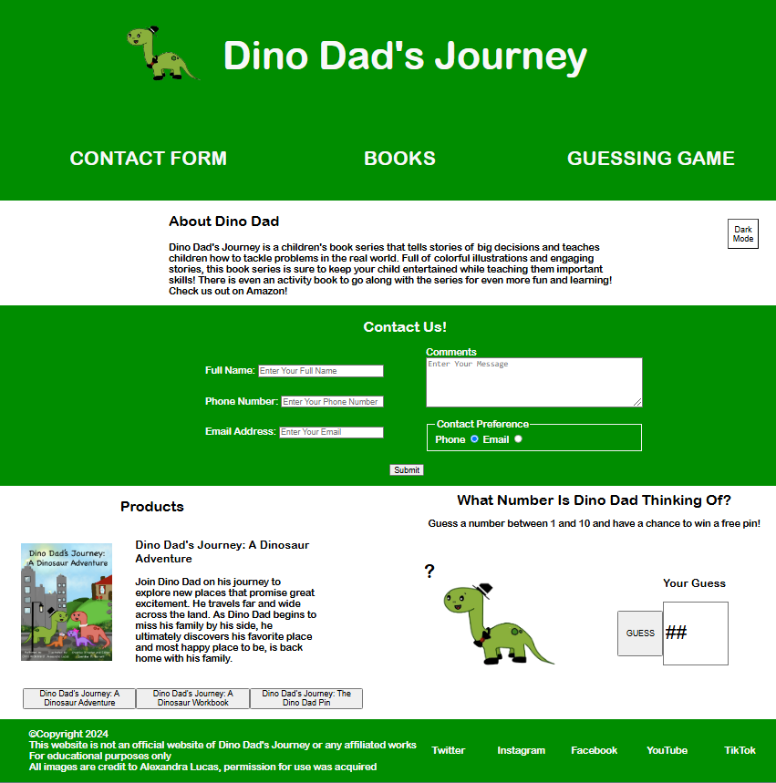
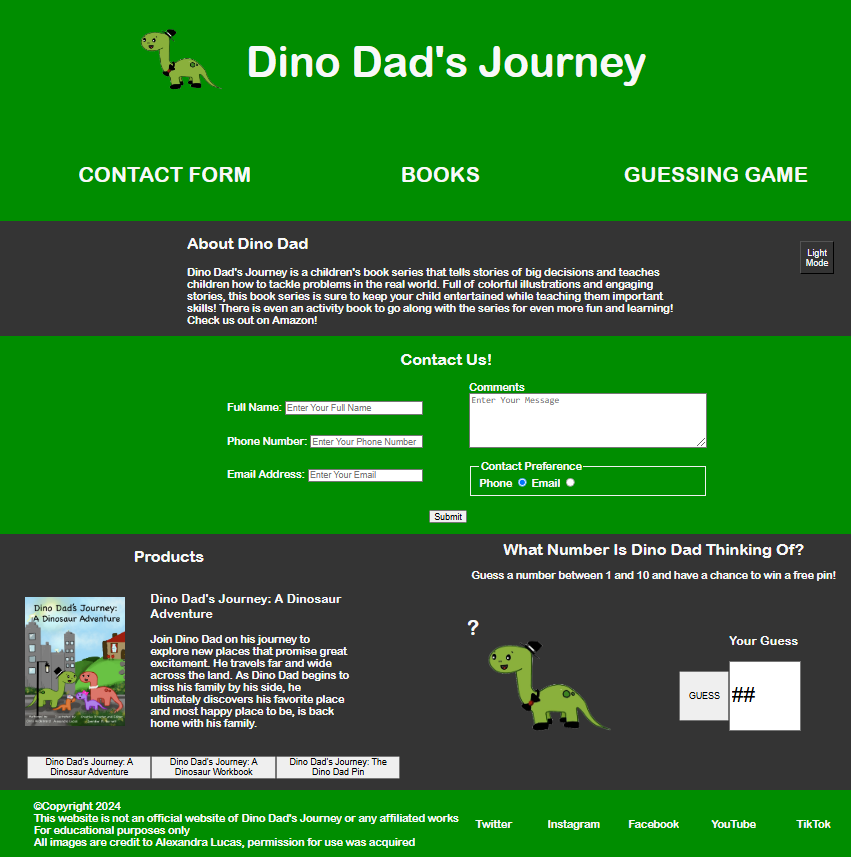

About
Background Info
Dino Dad's Journey: A Dinosaur Adventure is an up and coming book series centered around the Dino family. These are children's books with great illustrations to help engage the children. The author, editor, and illustrator I know personally and came to me after seeing the work I have already done previously.
Problem
Dino Dad's Journey is in need of a website in order to increase engagement and show off their books. They also require a way to link to the Amazon page that they sell their books from. A way to introduce children and parents to the IP of Dino Dad and what they are was also needed.
Process
I started with creating a wireframe for the project. After this wireframe, I started working on the HTML for the project. Once the HTML was put together, I did the CSS for the desktop view. I concluded with the JavaScript for the project. I then tested functionality for the entire website. I finally presented the website with a contact form, dark/light mode, a small interactive game, and a section to show off the books.
Result
A finished website that includes an interactive guessing game, a contact form, and a section to showcase the different products. This website has helped to bring more business to Dino Dad and increase the number of interactions with the IP.
Website Wireframes
Website Page Views
-

Here is the light mode version of the website. It showcases the links to lead you to different parts of the page, tells you about the business, and has the light/dark mode button. There is also the contact form. There is also the guessing game and the products section. You can select different products to view.
-

Here is the dark mode version of the website. This is useful to make the website easier on the eyes in the dark. This will help reduce eye strain.